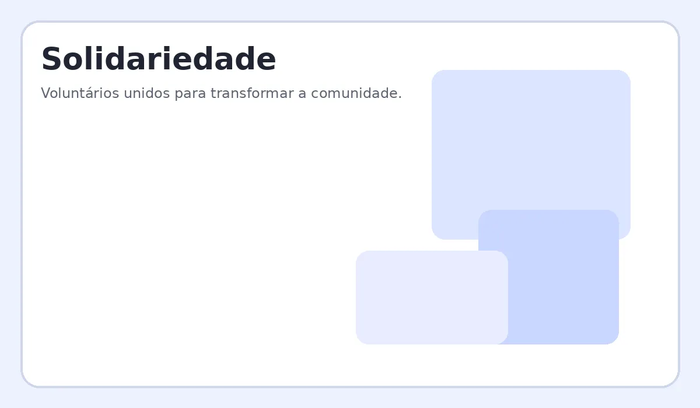

Alimentação
Arrecadação e distribuição de cestas básicas e refeições para famílias em situação de vulnerabilidade.
Solidariedade que transforma
O Instituto Esperança desenvolve ações sociais voltadas para pessoas em situação de vulnerabilidade, fortalecendo o acesso à alimentação, educação e cidadania.
Conheça nossos projetos
Somos uma organização sem fins lucrativos que conecta pessoas, empresas e voluntários a iniciativas que geram impacto positivo na comunidade. Nosso trabalho é realizado com transparência, respeito e participação coletiva.
Arrecadação e distribuição de cestas básicas e refeições para famílias em situação de vulnerabilidade.
Oficinas e atividades educativas que estimulam o aprendizado e a inclusão social.
Oportunidades para pessoas que desejam doar tempo, conhecimento e habilidades para nossas ações.